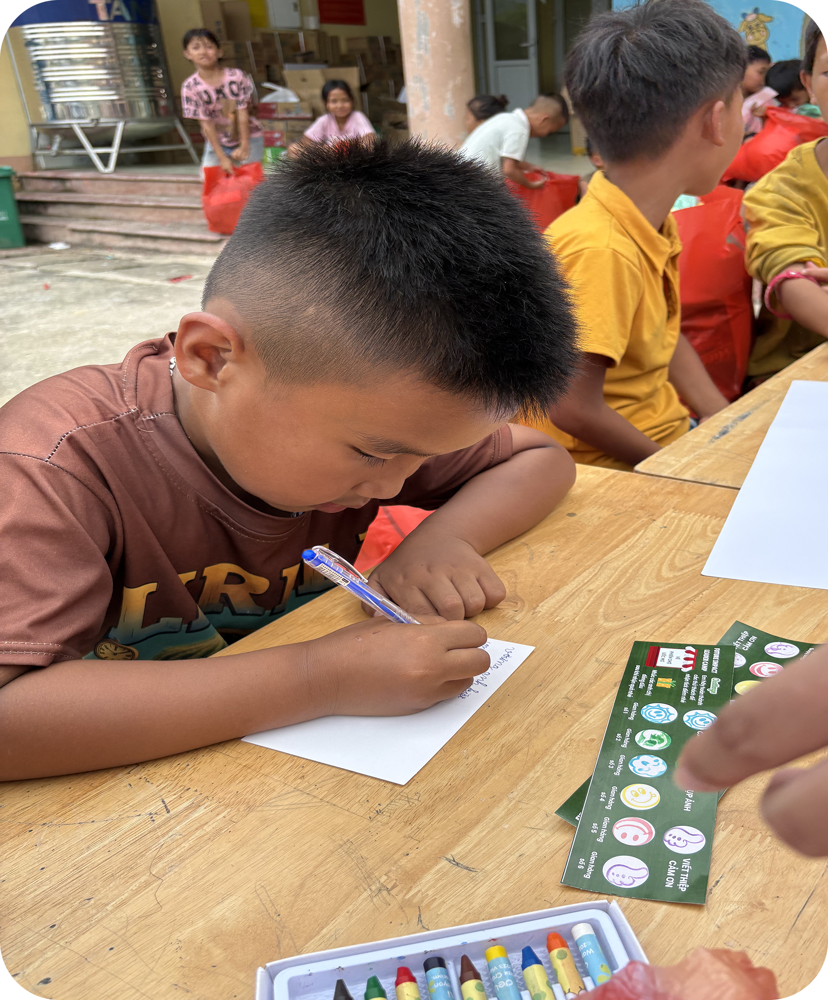
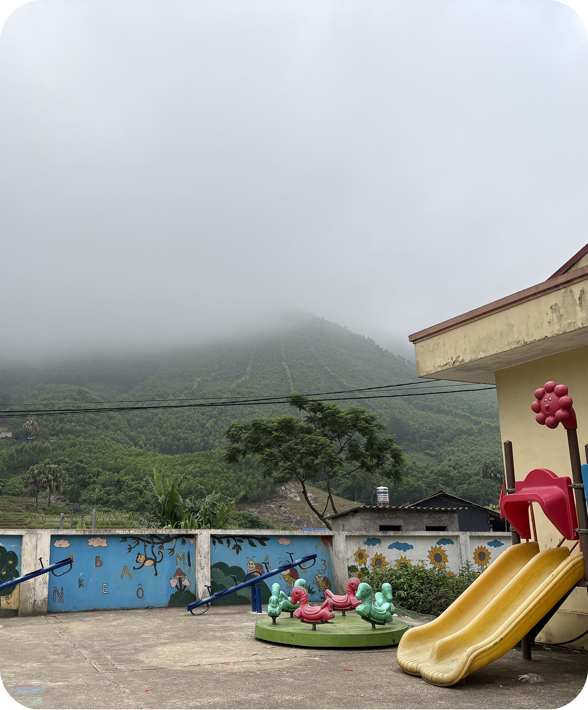
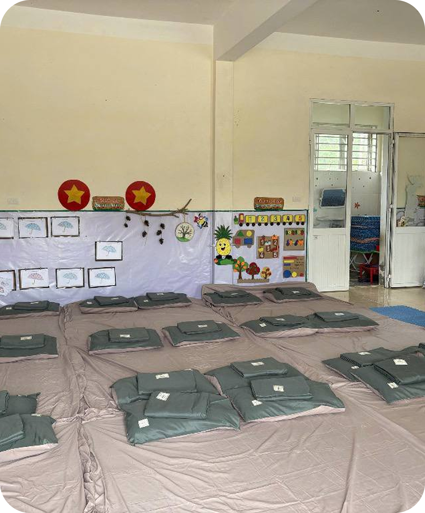

Meet the
Children
We support 120 children aged 3-15 at the schools in Ten Village. To protect their privacy, we never publish full names, birthdates or individual health data; information is presented by group, and photos are shared only with consent from organization.



Nutritional Groups
| Group | Characteristics | Diet focus |
|---|---|---|
| Energy & protein support | Low weight for age or height | Energy- and protein-dense; 4–5 small meals |
| Height-growth support | Short for age | Calcium, vitamin D, zinc, quality protein |
| Healthy maintenance | Measurements within normal range | Balanced, varied meals |
| Weight monitoring | High weight for height | Less sugar, more vegetables and activity |
Children with signs of severe malnutrition or illness are referred to a health facility instead of following the suggested menus.
Local
Ingredients
Menus prioritize seasonal food available in Bản Tèn: rice, maize, tubers; beans and tofu; eggs, fish, meat; leafy greens and vegetables (pumpkin, mustard greens, sweet-leaf greens...); seasonal fruit. Local sourcing lowers cost and supports village farmers.